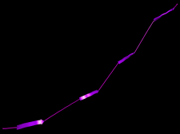
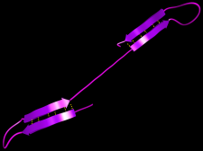

Dihedral Angle Files
It is often necessary to create not only one, but an entire palette of different conformations for a protein defined by a single amino acid sequence. For example, a global internal energy minimization algorithm might require several initial configurations to converge to a global minimum. In many cases, conformations for a single protein differ at a high level, for example by permuting beta-strands inside beta-sheets, shifting beta-strand alignments, or changing the alignment of adjacent strands in a beta-sheet from parallel to anti-parallel and vice versa. As a step towards high-level manipulation, ProteinShop supports a simple template mechanism to rapidly create many protein structures that differ as mentioned.
Using Dihedral Angle Files
At the core of this template mechanism is the ability to save conformations of a subset of coil regions inside a protein to a file, and to load these files back later to act as larger building blocks. As an example, consider a protein structure containing four beta-strands with one coil region between each pair of adjacent strands. A template approach to creating multiple protein structures is to first concentrate on partial beta-sheets containing only two strands each, and to save a dihedral angle file for each created pair. For example, these partial sheets could be 1-2, 2-3, and 3-4, each one in several versions (anti-parallel vs. parallel, shifted, etc), see Figure 1(b)-(d). Once all these templates have been created manually, it is easy to create complete beta-sheets from the saved building blocks. For example, to create a fully parallel beta-sheet with strand order 1-2-3-4, one would load the dihedral angle files for the parallel versions of pairs 1-2, 2-3, and 3-4. Creating partially parallel and anti-parallel beta-sheets would work in a similar way, see Figure 1(f)-(g). To change the strand order to, say, 2-1-4-3, one would load angle files for pairs 1-2 and 3-4, and then manually align strands 1-4 (the alignments of strands 2-1-4 and 1-4-3 could then be saved as even larger building blocks), see Figure 1(h).
Note: When saving a dihedral angle file for the alignment of two structures, it is important to remember to activate all coil regions between those two structures before writing the file. If some coil regions between two structures are not active, the structure alignment can not be reconstructed completely from the saved angle file.
| (a)  |
(b) |
(c)  |
(d)  |
| (e)  |
(f) |
| (g) |
(h)  |
|
| Figure 1: Several conformations of protein containing four beta-strands, generated by mixing and matching dihedral angle files. (a) Protein pre-configuration created from prediction file. (b)-(d) Manually generated partial beta-sheets containing pairs of adjacent beta-strands. (e) Intermediate conformation generated by combining two partial beta-sheets. (f)-(g) Complete conformations using different beta-strand permutations and alignment patterns. |
Dihedral Angle File Format
Each dihedral angle file stores dihedral angles for a sequence of coil regions. Accordingly, dihedral angle files are laid out in blocks, one for each coil region whose conformation is stored in the file. Each block is preceded by a header giving the secondary structure index of its associated coil region, the residue index of the coil region's first residue, and the number of residues in the coil region. Following the block header are lines, one for each residue in the coil region, each containing a phi/psi angle pair in degrees. An example dihedral angle file containing two coil regions looks as follows:
4 25 10
-78.6178 4.0938
146.8922 103.1488
-156.8838 -168.3636
-161.9229 -148.6337
89.6281 -167.1534
172.6690 -150.8951
-175.1816 -101.5526
-174.0643 179.3910
177.1078 -163.7736
-90.5422 -66.8824
6 41 10
117.5971 -30.0067
-172.6844 -112.1830
-114.8363 179.5930
137.0645 118.2513
143.2672 136.0750
-179.0634 158.6883
-178.5275 132.3876
-43.0446 132.7349
7.5369 -166.6106
30.5659 27.3805
When loading a dihedral angle file, ProteinShop checks the block headers inside the file against the secondary structures in the current protein, and only applies dihedral angles from those blocks that match the current protein. In detail this means that a secondary structure of the given index must exist, it must be a coil region, must start on the same residue index and have the same number of residues. Angle blocks that do not match the current protein are ignored when loading.
The (unintended) side effect of this region matching is that dihedral angle files can not be used as coil region templates in the current program version, in the sense that an n-residue angle block could be applied to any n-residue coil region. This would allow creating even higher-level building blocks such as hairpin turns.